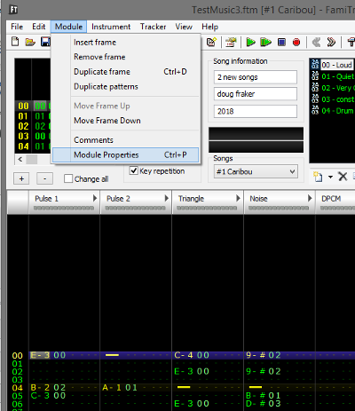
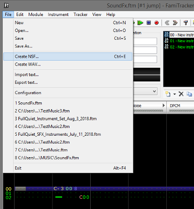

16、音效
即使你没有音乐天赋，你也可以制作一些很酷的音效。
再次用到了famitracker。
你可以用 fx或者其他的，存到一个文件夹中，每个音效都是一个"song",再模块属性中添加音乐

尝试编写音乐，使脉冲通道1或三角形播放主旋律。然后使用脉冲通道2（或噪声通道）进行声音效果。这样不会发生冲突。如果您遇到sfx切割问题，您还可以尝试使音效音量大于音乐（至少一点点）。我实际上让我的sfx比音乐更安静，但比Square 2频道更响亮（大多数sfx播放）
他们不能太长，用C00结束音效，C00要单独占一行。
保存，导出 NSF文件

16.声音效果
即使你没有音乐天赋，你也可以制作一些很酷的音效。音乐很好，但如果感觉像是真正的游戏，音效会变得更好。
再次，开放的famitracker。你几乎可以使用所有的fx和任何笔记。将所有声音效果放在1个文件中，每个声音效果都是自己的“歌曲”。在模块属性中添加歌曲...
18_FT
尝试编写音乐，使脉冲通道1或三角形播放主旋律。然后使用脉冲通道2（或噪声通道）进行声音效果。这样他们就不会发生碰撞。如果您遇到sfx切割问题，您还可以尝试使音效音量大于音乐（至少一点点）。我实际上让我的sfx比音乐更安静，但比Square 2频道更响亮，大多数sfx播放。
它们应该相当短。用C00结束每个效果，并将C00放在自己的行上。
保存。现在，导出到NSF文件。
19_FT
打开命令提示符并使用nsf2data和-ca65选项。我正在使用famitone 2 v1.15。声音效果代码在上次更新中发生了变化，因此请使用1.15来制作数据。
在sounds_data：中包含crt0.s中的声音数据，并确保FT_SFX_ENABLE设置在顶部，并且FT_SFX_STREAMS也是1.初始化代码将初始化我们的声音效果。拥有1个流意味着一次只能播放1个sfx。
我们只需要调用声音效果，如...
sfx_play（sfx，channel）。通道意味着流，使用channel = 0，因为我们只有1个激活。
如果要定义2-4个流，可以将通道设置为1,2,3。更高的优先级。我会警告不要太多，他们可能会发生冲突。我之前用了2个。
我做了它，以便跳转调用sfx_play（SFX_JUMP，0）。B按钮播放噪音sfx，选择按钮播放“ding”sfx。我稍后会用在吃硬币时候。
START 按钮依旧可以改变音乐
https://github.com/nesdoug/19_SFX/blob/master/platformer3.c
https://github.com/nesdoug/19_SFX